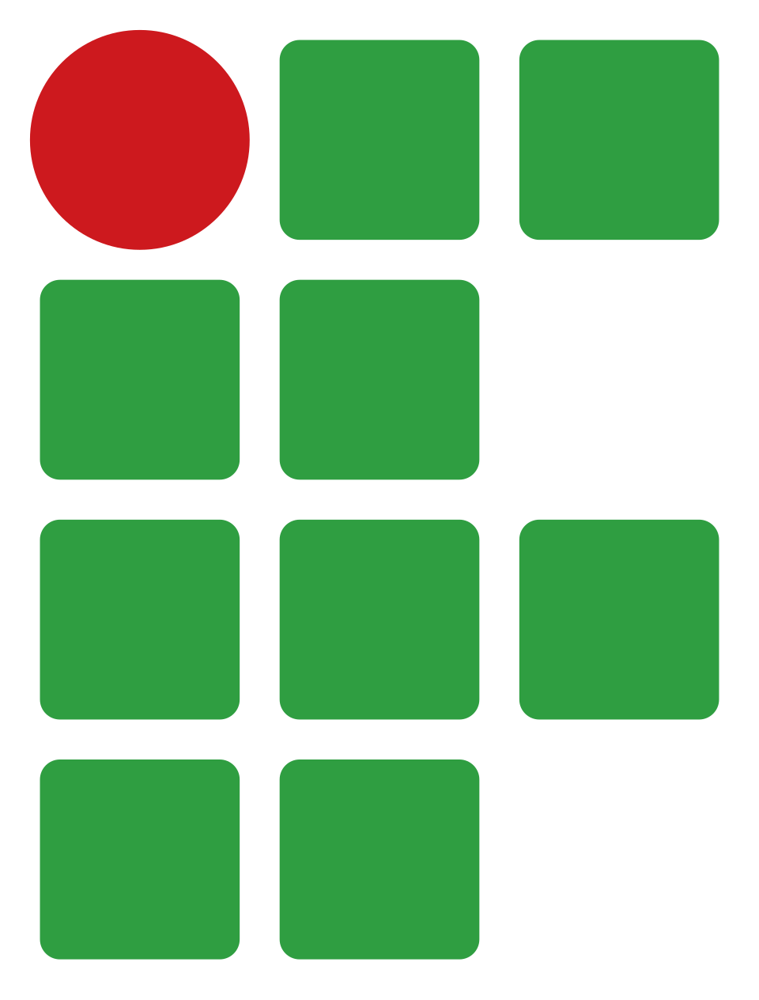

Sistema Integrado de Recepção do IFC
Recepção
Gráfico geral
Gráfico dos Setores
Carregando...
Recepcionista
Sair
Estatísticas por Setor
Compare o fluxo de visitas e os índices de satisfação dos setores do IFC.
Todos os Meses
Janeiro
Fevereiro
Março
Abril
Maio
Junho
Julho
Agosto
Setembro
Outubro
Novembro
Dezembro
Proporção de Visitas (Pizza)
Média de Satisfação (Colunas)
Volume de Visitas (Barras)
Setor Mais Visitado
-
Setor Melhor Avaliado
-
Média de Satisfação
0.0 ★
Total de Atendimentos
0
Carregando estrutura de gráficos do Google...